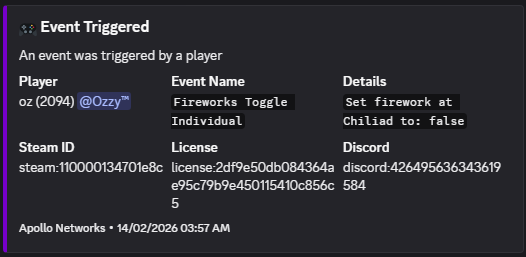

This project provides a straightforward way for other scripts to log detailed in-game events to Discord via webhooks. By exposing a simple exports function on the client, scripts can trigger a server event that formats and sends richly structured Discord embed messages, including information like player, command, arguments, and identifiers.
The system is divided into a lightweight client export that accepts event data, and a robust server handler which assembles and formats the embed payload before dispatching it to Discord. The implementation takes care to handle missing identifier fields gracefully, and encapsulates all HTTP and embed logic server-side, allowing for easy integration and minimal dependencies for resource authors.
This Discord logging system is designed with simplicity and portability in mind for FiveM developers. The client code exposes a single exports("LogEvent") function that scripts can easily call, passing an event name, event details, and your Discord webhook. When triggered, it simply fires a custom server event, offloading all the formatting and network duties to the server—keeping client code extremely lightweight.
The server-side implementation then takes over, collecting player info, a robust set of identifiers (Discord, Steam, license, etc.), formatting an embed payload, and securely posting it to Discord using PerformHttpRequest. Fields are included or gracefully replaced with "N/A" if not present, reducing issues with partial player data. Commands, usage arguments, and user identifiers are all made visible in the resulting Discord log for easy moderation or auditing.
This architecture means no sensitive details or HTTP logic need to touch client code, making it safe for exports—while keeping all formatting and integration logic configurable and maintainable in server resources. The clean separation also keeps the exported API simple, letting other resources log with one function call and minimal boilerplate.
Building this logging system taught the importance of keeping client code minimal and offloading sensitive operations, like HTTP requests and identifier processing, to the server side for better security and maintainability. I learned practical techniques for collecting robust player metadata, including gracefully handling cases where identifiers may be missing, and for structuring Discord embed payloads in a clear and audit-friendly way. Designing a clean, single-function client export and a server-side handler gave me experience with modular API design in Lua for FiveM resources. I also refined my approach to error handling, payload formatting, and decoupling resource configuration—skills which will be broadly valuable in future game scripting and tooling projects.